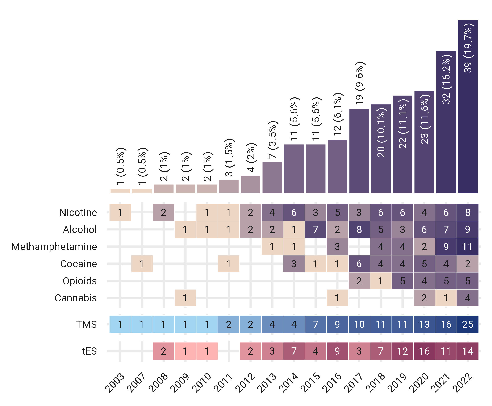
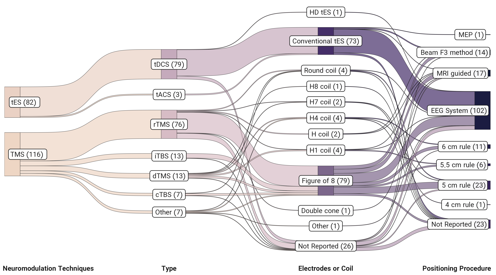
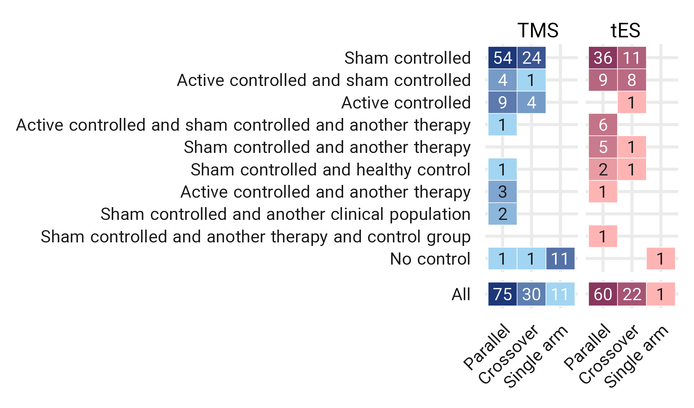
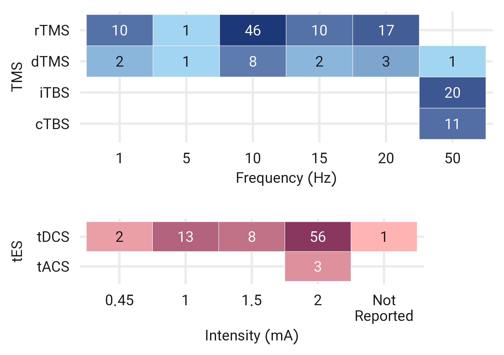
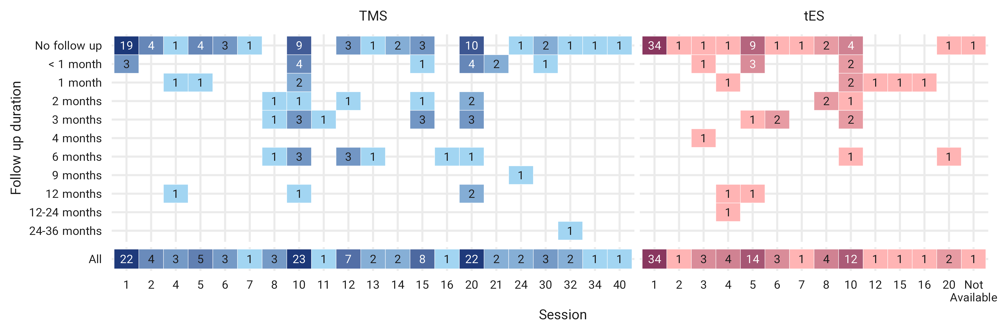

Summary
Contribution of countries and drug classes
![Global contribution to tES/TMS studies for addiction medicine. The number of tES/TMS studies in each country, broken down by the type of addictive substance color coded for the type of intervention; tES in red and TMS in blue. Some of the studies included more than one type of addictive substance in their inclusion criteria. Note that only papers whose full text was in English were included, potentially leading to a relative over-representation of the majority of English-speaking countries. Abbreviation: tES: transcranial electrical stimulation, TMS: transcranial magnetic stimulation.](fig/figure-2.png)
Global contribution to tES/TMS studies for addiction medicine. The number of tES/TMS studies in each country, broken down by the type of addictive substance color coded for the type of intervention; tES in red and TMS in blue. Some of the studies included more than one type of addictive substance in their inclusion criteria. Note that only papers whose full text was in English were included, potentially leading to a relative over-representation of the majority of English-speaking countries. Abbreviation: tES: transcranial electrical stimulation, TMS: transcranial magnetic stimulation.

tES/TMS studies for addiction treatment across years. The number of tES/TMS studies each year from 2003 till the end of 2022, broken down by the type of addictive substance color-coded by the type of intervention, tES in red and TMS in blue. Some of the studies included more than one type of addictive substance in their inclusion criteria. Abbreviation: tES: transcranial electrical stimulation, TMS: transcranial magnetic stimulation.
Number of subjects, sex proportion, and substance use disorder condition
![Participants in tES/TMS for addiction treatment studies (Total number of subjects in the active stimulation arm = 5519). The Sankey diagram represents the number of participants in FDCR studies divided by gender, the current status of their addiction, type of substances, and interventions. The width of the boxes in each column represents the relative prevalence of each category in the column, while the width of the ribbons connecting the categories across columns represents the proportion of participants shared between each of the two categories. Abbreviation: others are studies that included participants with different types of substance use disorders, tES: transcranial electrical stimulation, TMS: transcranial magnetic stimulation.](fig/figure-3.png)
Participants in tES/TMS for addiction treatment studies (Total number of subjects in the active stimulation arm = 5519). The Sankey diagram represents the number of participants in FDCR studies divided by gender, the current status of their addiction, type of substances, and interventions. The width of the boxes in each column represents the relative prevalence of each category in the column, while the width of the ribbons connecting the categories across columns represents the proportion of participants shared between each of the two categories. Abbreviation: others are studies that included participants with different types of substance use disorders, tES: transcranial electrical stimulation, TMS: transcranial magnetic stimulation.
Targeted brain areas
![Stimulation targets for tES/TMS trials for addiction treatment. Stimulation targets based on the type of stimulation are represented over the cortex; Excitatory: HF TMS and anodal tDCS, tACS, Inhibitory: LF TMS, and cathodal tDCS. The depicted number of cortical locations exceeds 198 (the total number of studies in this systematic review) due to the utilization of multiple stimulation protocols in some studies. Notably, in one tDCS study, an HD electrode with anode and cathode placement on the left DLPFC was employed. Bilateral and deep TMS investigations, as well as one temporoparietal stimulation study, for each trial two targets were considered each over a single hemisphere. The term “Frontopolar” collectively refers to the medial prefrontal cortex (mPFC), ventromedial prefrontal cortex (vmPFC), and sMFC regions across the studies. Abbreviations: tES: transcranial electrical stimulation, tDCS: transcranial direct current stimulation, tACS: transcranial alternating stimulation, TMS: transcranial magnetic stimulation, HF TMS: high-frequency TMS (> 5 Hz), LF TMS: low-frequency TMS (< 1 Hz), SFG: superior frontal gyrus, DLPFC: dorsolateral prefrontal cortex, IFG: inferior frontal gyrus, OFC: orbitofrontal cortex, ACC: anterior cingulate cortex, PCC: posterior cingulate cortex, M1: motor cortex.](fig/figure-7.png)
Stimulation targets for tES/TMS trials for addiction treatment. Stimulation targets based on the type of stimulation are represented over the cortex; Excitatory: HF TMS and anodal tDCS, tACS, Inhibitory: LF TMS, and cathodal tDCS. The depicted number of cortical locations exceeds 198 (the total number of studies in this systematic review) due to the utilization of multiple stimulation protocols in some studies. Notably, in one tDCS study, an HD electrode with anode and cathode placement on the left DLPFC was employed. Bilateral and deep TMS investigations, as well as one temporoparietal stimulation study, for each trial two targets were considered each over a single hemisphere. The term “Frontopolar” collectively refers to the medial prefrontal cortex (mPFC), ventromedial prefrontal cortex (vmPFC), and sMFC regions across the studies. Abbreviations: tES: transcranial electrical stimulation, tDCS: transcranial direct current stimulation, tACS: transcranial alternating stimulation, TMS: transcranial magnetic stimulation, HF TMS: high-frequency TMS (> 5 Hz), LF TMS: low-frequency TMS (< 1 Hz), SFG: superior frontal gyrus, DLPFC: dorsolateral prefrontal cortex, IFG: inferior frontal gyrus, OFC: orbitofrontal cortex, ACC: anterior cingulate cortex, PCC: posterior cingulate cortex, M1: motor cortex.
Electrode/coil positioning system
![Trial counts for the target of stimulation in TMS/tES studies. Stimulation targets based on the type of stimulation are represented over the cortex; TMS, and tES. The depicted number of cortical locations exceeds 198 (the total number of studies in this systematic review) due to the utilization of multiple stimulation protocols in some studies (for more details see Figure 4). 221 out of 278 trials (79.5%) in 198 published studies targeted left/right DLPFC. Abbreviation: DLPFC: dorsolateral prefrontal cortex, FP: Frontopolar, IFG: inferior frontal gyrus, TP: temporoparietal, ACC: anterior cingulate cortex, OFC: orbitofrontal cortex, M1: motor cortex, SFG: superior frontal gyrus.](fig/figure-8.png)
Trial counts for the target of stimulation in TMS/tES studies. Stimulation targets based on the type of stimulation are represented over the cortex; TMS, and tES. The depicted number of cortical locations exceeds 198 (the total number of studies in this systematic review) due to the utilization of multiple stimulation protocols in some studies (for more details see Figure 4). 221 out of 278 trials (79.5%) in 198 published studies targeted left/right DLPFC. Abbreviation: DLPFC: dorsolateral prefrontal cortex, FP: Frontopolar, IFG: inferior frontal gyrus, TP: temporoparietal, ACC: anterior cingulate cortex, OFC: orbitofrontal cortex, M1: motor cortex, SFG: superior frontal gyrus.

Positioning system in placing tES electrodes or TMS coils over the scalp in tES/TMS for addiction medicine. The Sankey diagram represents the number of tES/TMS studies (n = 198) divided by type of stimulation, type of coil/electrode, and electrode/coil positioning system. Numbers reported in parentheses inside the boxes are the number of studies. Other in stimulation type stands for studies that used a combination of two different stimulation types (e.g., cTBS and iTBS).
![Positioning system in DLPFC stimulation. 113 out of 223 trials (51.1%) used EEG standard system (F3/F4 location) as the most commonly used method for targeting DLPFC. Other methods are also used for DLPFC stimulation. Abbreviation: tES: transcranial electrical stimulation, TMS: transcranial magnetic stimulation, dTMS: deep TMS, DLPFC: the dorsolateral prefrontal cortex, FP: frontopolar, IFG: inferior frontal gyrus, TP: temporoparietal, ACC: anterior cingulate cortex, M1: motor cortex, PCC: posterior cingulate cortex, SFG, superior frontal gyrus.](fig/figure-9-b.png)
Positioning system in DLPFC stimulation. 113 out of 223 trials (51.1%) used EEG standard system (F3/F4 location) as the most commonly used method for targeting DLPFC. Other methods are also used for DLPFC stimulation. Abbreviation: tES: transcranial electrical stimulation, TMS: transcranial magnetic stimulation, dTMS: deep TMS, DLPFC: the dorsolateral prefrontal cortex, FP: frontopolar, IFG: inferior frontal gyrus, TP: temporoparietal, ACC: anterior cingulate cortex, M1: motor cortex, PCC: posterior cingulate cortex, SFG, superior frontal gyrus.
Outcome measures
![Outcome measure in tES/TMS studies for addiction medicine. Different types of outcome measures in tES/TMS studies which, by virtue of their study design, could theoretically support the effectiveness of tES/TMS studies, broken down by substance or intervention of interest and color-coded by the type of intervention; tES in red and TMS in blue. Note that all cells do not sum to 198 since some studies considered more than one outcome measure. Bars show the number of significant (dark lines)/non-significant (light lines) findings based on the results reported in the abstracts. Vertical lines indicate the sig/non-sig results based on the type of stimulation or substance use disorder. Horizontal lines indicate the sig/non-sig results based on the reported outcome measures in the abstract.](fig/figure-1-a.png)
Outcome measure in tES/TMS studies for addiction medicine. Different types of outcome measures in tES/TMS studies which, by virtue of their study design, could theoretically support the effectiveness of tES/TMS studies, broken down by substance or intervention of interest and color-coded by the type of intervention; tES in red and TMS in blue. Note that all cells do not sum to 198 since some studies considered more than one outcome measure. Bars show the number of significant (dark lines)/non-significant (light lines) findings based on the results reported in the abstracts. Vertical lines indicate the sig/non-sig results based on the type of stimulation or substance use disorder. Horizontal lines indicate the sig/non-sig results based on the reported outcome measures in the abstract.
0.1 Study design and control condition

Study design and control condition. TMS/tES trials in addiction medicine with the type of randomization divided by control condition, color-coded for the type of intervention; tES in red and TMS in blue.
0.2 Dosage, number of sessions, and follow up

Stimulation dose. Stimulation frequency for TMS is in blue and stimulation intensity for tES studies is in red.

Stimulation sessions and follow-up. Follow-up duration breakdown for the number of stimulation sessions for TMS in blue and tES in red.